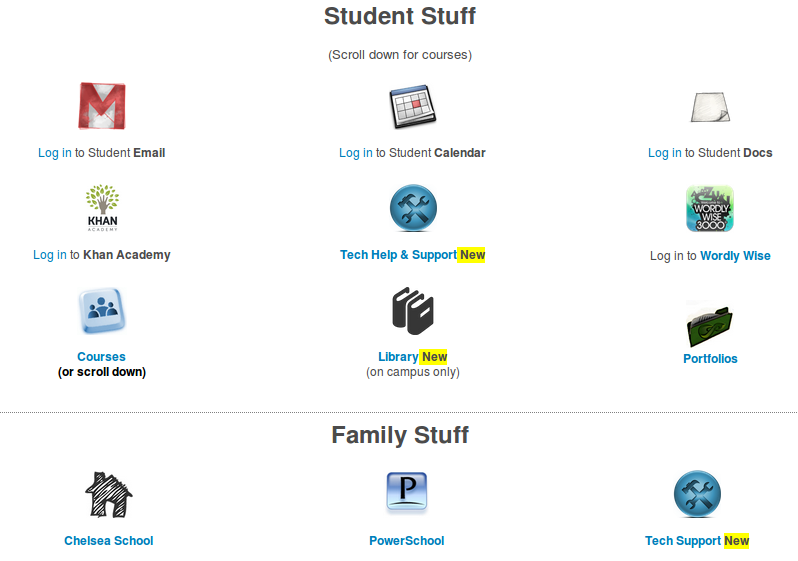
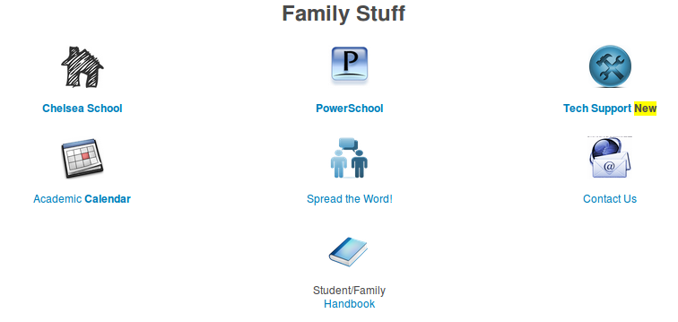
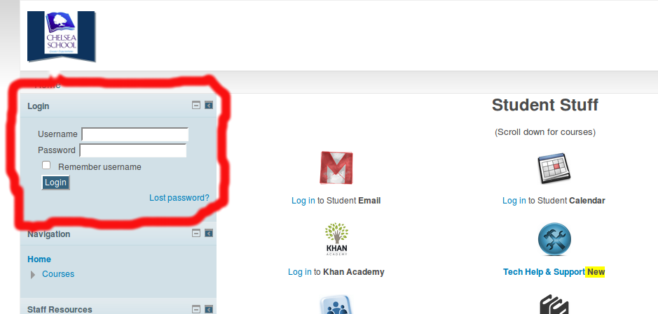

Moodle is a “learning management system,” a phrase used to refer to a class of software “for the administration, documentation, tracking, reporting and delivery of e-learning education courses or training programs.” [1]
Institutions rely on Moodle to fulfill different functions. At Chelsea School, we rely on Moodle to augment on-campus courses or to provide hybrid courses.
Moodle is accessible via the Web at the following address: http://chelseapride.org - note the address does not begin with www.
Chelsea School’s Moodle works best with Google Chrome, Mozilla Firefox, Opera, and Safari.
| [1] | Ellis, Ryann K. (2009), Field Guide to Learning Management Systems, ASTD Learning Circuits. |
We’ve made a significant effort to make Moodle’s front page more accessible to more students.
In the past, students have been faced with a wall of text listing courses and course catalogs. Beginning this year, the main part of the Front Page begins with a more visual experience; the verbal components are still on the front page, but are now subordinate to the icon-driven experience.
Icons appear in three groups: Quicklinks for students, quicklinks for parents and guardians, and finally course categories.
In addition to a quicklink to course icons, students will find links for accessing other resources, such as their school E-mail accounts, Khan Academy, etc.
This section includes links to PowerSchool, the student handbook, etc.
To the immediate left of the front page content area is a sidebar for navigation. It is divided into blocks. The top block is for logging in to Moodle.
Logging in requires a username and complex password. Both are provided by a student’s advisor and cannot be changed by the student. The pattern for student usernames is <lastname><first initial> (all lower case). To log in, enter the username in the username field and the password into the password field; press enter or click Login to submit credentials.
After a brief wait, successful login will be indicated at the top right of the page, which should indicate that the student is the logged in user.
Forgotten passwords can be recovered by advisors and their colleagues. However, students who get stuck logging in to Moodle from home can contact helpdesk at http://chelseapride.org/helpdesk.
There are icons for helpdesk in both the Student’s section of the front page and the Parents’ and Guardians’ section of the front page.
Parents and guardians are discouraged from logging in to student accounts; we understand, however, that in some cases it can be helpful.
With that in mind, we’ve configured all available courses to be either:
At Chelsea School, restricted courses have been configured to provide guest access to guests with a course passcode.
The passcode with which parents and guardians can access all restricted courses is _________________.
To access a course as a guest,
{kind=link}
{kind=link}
{kind=link}
{kind=link}
{kind=link}